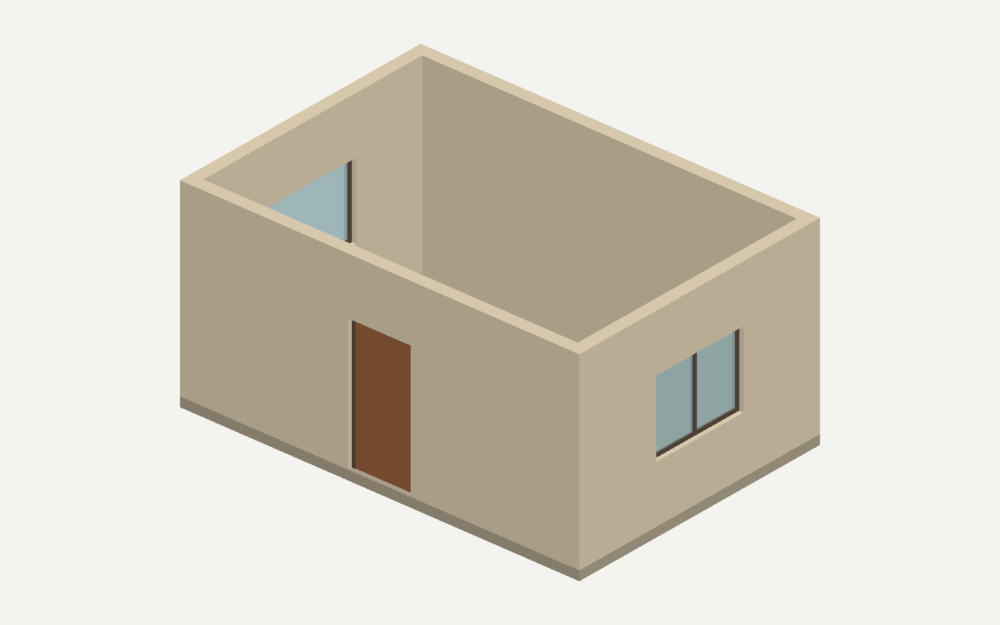

待人工检查 · 未登记。人工确认后才进入 accepted 流程。

请生成一个单层矩形接待室的完整 IFC2X3 文件，单位为毫米。室内净长 6000、净宽 4000，墙高 3000、墙厚 200，四面墙闭合。地坪顶面标高 0，厚 150，覆盖整个房间及墙底。为便于检查室内，本次明确不建屋顶或吊顶。设一个室内空间。 正南面墙正中设置一樘左单开门，宽 1000、高 2100，门底与地坪齐平。正东面墙正中设置一樘双竖面板窗，正西面墙正中设置一樘单面板窗；两窗均宽 1600、高 1200、窗台标高 900。开口与各自门窗名义宽高一致并穿透墙厚；门窗居中安装，保留窗框、玻璃、门框和门扇细节，不加外伸门套或复杂五金。 四面墙材料明确为砖，地坪材料明确为混凝土；其他构件不指定物理材料。采用 warm-residential 协调风格，窗玻璃透明、窗框与门扇有协调的部件分色。没有提供任何耐火、承重、强度、热工性能或普通属性，请不要自动添加这些属性。没有共享 Type 要求。不改变上述尺寸和位置；模型原点取室内地坪中心，X 向东、Y 向北、Z 向上。